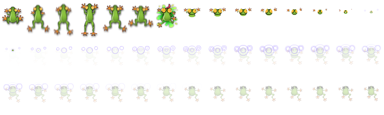

“Jumper Frog” Documentation by “Code This Lab S.r.l.” v1.0
“Jumper Frog”
Created: 01/04/2015
By: Code This Lab S.r.l.
Email: info@codethislab.com
Thank you for purchasing our game. If you have any questions that are beyond the scope of this help file, please feel free to email via user page contact form here. Thanks so much!
Table of Contents
- Description
- Folder Content
- Getting Started
- HTML Structure
- CSS Files and Structure
- JavaScript
- Game functions
- Edit Frog SpriteSheet
- Disable Sounds
- Wordpress Plugin
A) Description - top
Jumper Frog is a HTML5 Game. Enjoy this colorful version of the classica game Frogger.
The goal of the game is to guide a frog from the bottom of the screen to the top into one of the fives available coves.
The ZIP package contains the game with 1080x1136 resolution that scales to fit the whole screen device
Just warning that for very wide screens, the game may not be perfectly full screen.
The game is fully compatible with all most common mobile devices.
Sounds are enabled for mobile but we can't grant full audio compatibility on all mobile devices due to some well-know issue between some mobile-browser and HTML5.
So if you want to avoid sound loading, please read Disable Sound section).
WARNING: Sounds can't be enabled for Windows Phone as this kind of device have unsolved issues with 'audio' and 'video' tag.
B) Folder Content - top
- ctl_arcade_wp_plugin: This folder contains the zip package that can be used with our Wordpress plugin "CTL Arcade" (http://codecanyon.net/item/ctl-arcade-wordpress-plugin/13856421).
- game This folder contains the full game source code ready to be edited.
- live_demo This folder contains the obfuscated code. You should upload this folder on your server if you don't need to make any changes.
- readme This folder contains the package instructions.
- thumbs This folder contains all game icons.
C)Getting Started - top
To install the game just upload on your server the game folder game640x1136.
- Game Embedding: The proper way to embed the game is in a full-screen web page or in an iframe.
In the first case the game will fit the screen size, in the second, that of the iframe.
If the iframe size matches that of the screen, the game will fit accordingly.
The alignment will be proportioned to the aspect ratio of the game.
To install the game in a WordPress website, we suggest to use our plugin CTL Arcade .
- Save Score: if you need to call your php function for saving score, you can add it in the index.html file:
$(document).ready(function(){ var oMain = new CMain(); $(oMain).on("save_score", function(evt,iScore) { //alert("iScore: "+iScore); }); }); - Localization: You can easily change game text for different languages, changing string in CLang.js
TEXT_GAMEOVER = "GAME OVER"; TEXT_SCORE = "SCORE"; TEXT_PLAY = "PLAY"; TEXT_RESTART = "RESTART"; TEXT_TIME = "TIME"; TEXT_SCORE = "SCORE"; TEXT_LEVELEND = "LEVEL "; TEXT_COMPLETEEND = " COMPLETE"; TEXT_SPLAT = "SPLAT!"; TEXT_DROWN = "GLU GLU.."; TEXT_CRASH = "BONK!"; TEXT_GREAT = "GREAT!!"; TEXT_HELP1 = "USE ARROWS KEYS TO REACH THE OTHER SIDE OF THE RIVER BEFORE TIME RUNS OUT. TO COMPLETE A LEVEL, YOU HAVE TO PUT A FROG ON EACH OF THE 5 COVES"; TEXT_HELP2 = "DON’T GET DRIVEN OVER BY CARS ALONG THE STREET"; TEXT_HELP3 = "USE THE FLOATING TRUNKS OR TURTLE SHELLS TO CROSS THE RIVER"; TEXT_HELP4 = "IF YOU CATCH A FLY, YOU GET EXTRA POINTS"; TEXT_HELP_MOB1 = "SWIPE TO REACH THE OTHER SIDE OF THE RIVER BEFORE TIME RUNS OUT. TO COMPLETE A LEVEL, YOU HAVE TO PUT A FROG ON EACH OF THE 5 COVES"; TEXT_DEVELOPED = "DEVELOPED BY"; TEXT_SHARE_IMAGE = "200x200.jpg"; TEXT_SHARE_TITLE = "Congratulations!"; TEXT_SHARE_MSG1 = "You collected "; TEXT_SHARE_MSG2 = " points!
Share your score with your friends!"; TEXT_SHARE_SHARE1 = "My score is "; TEXT_SHARE_SHARE2 = " points! Can you do better";
var oMain = new CMain({
lives: 5, //Number of starting lives
crossing_time: 60000, // Maximum time available to get a frog into a cove (in ms)
score_in_nest: 100, //Points earned when a frog is in the cove
score_with_fly: 500, //Points earned when a frog eat a fly in the cove
score_death: -200, //Points losed when frog deads
frog_speed : 100, //Set the frog jump speed(in ms)
sink_turtle_occurrency: 4, //Number of standard turtle-group before a sink turtle-group
num_level_increase_sink: 5, //Number of level before reduce by 1, the "sink_turtle_occurrency" parameter
time_fly_to_spawn: 7000, //Time to spawn a fly (in ms)
time_fly_to_disappear: 3000, //Time before a fly disappear (in ms)
//Time-Speed of a street lane (in ms). Each value will be randomly assigned to a lane every level
street_lane_timespeed: [12000, 10000, 9000, 7000, 6000],
//Decrease time-speed of a street lane (in ms) every level. Each value will be add to "street_lane_speed" parameters vector, respectively
street_timespeed_decrease_per_level: [-150, -150, -250, -150, -250],
//Occurrence of a street lane cars spawn (in ms). Each value will be randomly assigned to a lane every level, according with "street_lane_speed" parameters vector
street_lane_occurrence: [3500, 3700, 3900, 4100, 4300],
//Decrease occurrence of a street lane cars spawn(in ms). Each value will be subtract to "street_lane_occurrence" parameters vector, respectively
street_occurrence_decrease_per_level: [-100, -100, -100, -100, -100],
//Time-Speed of a water lane (in ms). From bottom to top:
water_lane_timespeed: [ 13000, //FIRST LANE
10000, //SECOND LANE
8000, //THIRD LANE
10000, //FOURTH LANE
10000 ], //FIFTH LANE
//Decrease time-speed of a water lane (in ms) every level. Each value will be add to "water_lane_speed" parameters vector, respectively
water_timespeed_decrease_per_level: [ -150, //FIRST LANE
-150, //SECOND LANE
-250, //THIRD LANE
-150, //FOURTH LANE
-150 ], //FIFTH LANE
//Occurrence of a water lane trunk or turtle spawn (in ms). From bottom to top:
water_lane_occurrence: [ 5000, //FIRST LANE
4000, //SECOND LANE
3000, //THIRD LANE
3500, //FOURTH LANE
5000 ], //FIFTH LANE
//Increase occurrence of a water lane trunk or turtle spawn (in ms). Each value will be add to "water_lane_occurrence" parameters vector, respectively
water_occurrence_increase_per_level: [ 50, //FIRST LANE
50, //SECOND LANE
50, //THIRD LANE
50, //FOURTH LANE
50 ], //FIFTH LANE
fullscreen:true, //SET THIS TO FALSE IF YOU DON'T WANT TO SHOW FULLSCREEN BUTTON
check_orientation:true, //SET TO FALSE IF YOU DON'T WANT TO SHOW ORIENTATION ALERT ON MOBILE DEVICES
});
D)HTML Structure - top
This game have the canvas tag in the body. The ready event into the body calls the main function of the game: CMain().
The head section declares all the javascript functions of the game. The whole project uses a typical object-oriented approach.
In the init function there are 7 mapped events that can be useful eventually for stats
E) CSS Files and Structure - top
The game use two CSS files. The first one is a generic reset file. Many browser interpret the default behavior of html elements differently. By using a general reset CSS file, we can work round this. Keep in mind, that these values might be overridden somewhere else in the file.
The second file contains all of the specific stylings for the canvas and some hack to be fully compatible with all most popular mobile devices
F) JavaScript - top
This game contains:
- jQuery
- Our custom scripts
- CreateJs plugin
- Howler Sound library
- jQuery is a Javascript library that greatly reduces the amount of code that you must write.
- The game have the following js files:
- CMain: the main class called by the index file.
This file controls the sprite_lib.js file that manages the sprite loading, the loop game and initialize the canvas with the CreateJs library - ctl_utils: this file manages the canvas resize and its centering
- screenfull: this library manages the fullscreen
- howler: this library manages the sounds
- sprite_lib: this class loads all images declared in the main class
- settings: general game settings
- CLang: global string variables for language localization
- CPreloader: simple text preloader to show resources loading progress
- CMenu: simple menu with the play button
- CGfxButton: this class create a standard button
- CToggle: this class create a standard toggle button
- CTextButton: this class create a standard text button
- CGame: this class manages the game logic
- CInterface: this class controls game GUI that contains text and buttons
- CEndPanel: the final game over panel
- CHelpPanel: the help panel that is shown before game starting
- CCar: this class manages the cars and all movements
- CFly: this class manages the fly occurence
- CFrog: this class manages the frog object
- CStreet: this class manages the street line occurences
- CTrunk: this class manages the trunk object
- CTurtle: this class manages the turtle object
- CWater: this class manages the water images
- CWinText: this class is called when the game want to show a notifier text (like frog death)
- CMain: the main class called by the index file.
- CreateJs is a suite of modular libraries and tools which work together to enable rich interactive content on open web technologies via HTML5.
- Howler is a javascript Audio library.
Resuming, the complete game flow is the following:
- The index.html file calls the CMain.js file after ready event is called
- The main class calls CPreloader.js to init preloader text and start sprite loading
- When all sprites contained in "/sprites" and "/sounds" folder are loaded, the main class removes the preloader and calls the CMenu.js file that shows the main menu
- If the user click the Play button in main menu, the CGame.js class is called and the game starts
- The User play the game
- If the player loses all the lives, the game calls the End Panel
- If the user click on the exit button in the up-right corner, the game returns to the menu screen
G) Game functions - top
In this section will be explained all the most important functions used in CGame.js file.- _init()
This function attach on the canvas some game sprites like background (oBg), GUI and initialize the touch events. - reset()
This function is called when a new level must be created. - _initLevel()
This function initialize all the level occurences. - _generateNewFrog()
This function is called when a new frog must be created. - _generateCar()
This function is called when a new car must be placed. - _generateSupport()
This function is called when a new trunk or tutle must be placed. - update()
This function manages the main game loop with collisions.
H) Edit Frog SpriteSheet - top
The game contains the spritesheet with all the animations that you can edit if you want to change game artwork.
The image have 6 different states that represent 6 different actions: idle: [0], jump: [1,5,"idle"], splat: [6], drown: [7,44,"drown_stop"], drown_stop: [44], skid_marks.
- frog.png: If you want to change frog graphic please respect png size and disposition.

I) Disable Sounds - top
If you want to disable all the sounds for mobile devices, you have to change the following value in settings.js file:
var DISABLE_SOUND_MOBILE = true;
J) Wordpress Plugin - top
CTL Arcade will allow you to add a real arcade on your worpress website, in this way your users will be more involved and will stay connected longer.
It's possible to add Ads banner at the beginning of each game and at the end of each level. This will give you a new tool to increase your revenues.
Your own users will promote your website sharing their scores on the main Social Networks, with no extra costs for you.
You'll get by default the score-sharing on Twitter. To add Facebook just follow the guideline below.
3 widgets can be added in your pages through a shortcode.
- Game iframe
- Rate the Game
- Leaderboard
- PHP 4.3
- WordPress 4.3.1
- HTML5
- Canvas
- Javascript / jQuery
You can find it here!

Once again, thank you so much for purchasing this game. Fell free to contact us if you have any questions or issue relating to this game. No guarantees, but we'll do our best to assist.